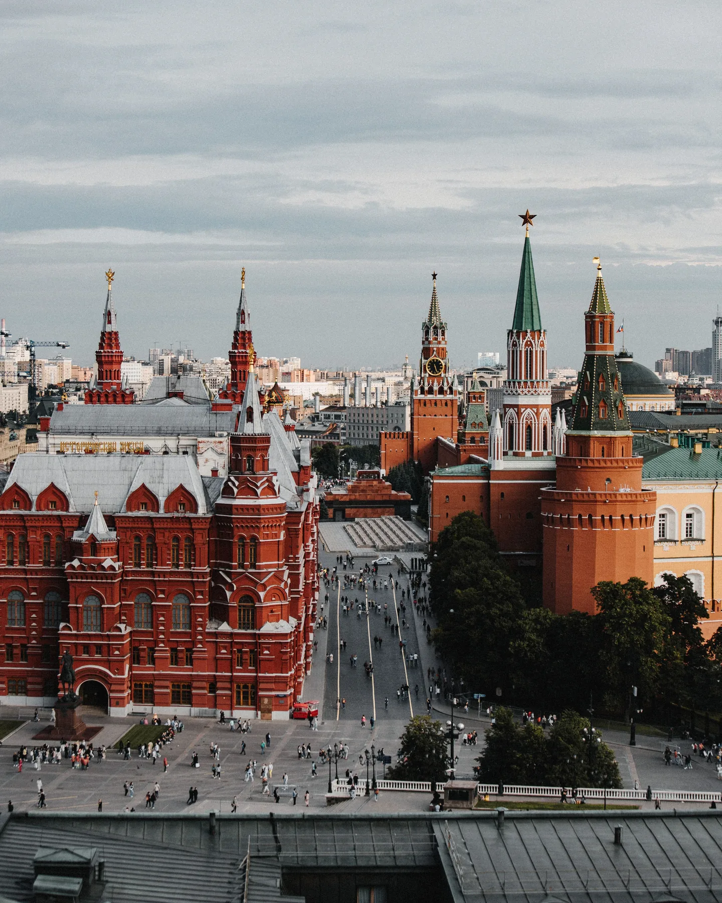

Интересные каналы
о Москве и Петербурге
Новости, места, история, события
и атмосфера любимых городов
⌖ МОСКВА
Москва
Всё самое интересное
о жизни столицы

⌖ САНКТ-ПЕТЕРБУРГ
Санкт-Петербург
Атмосфера, история
и жизнь города на Неве
♡
Выбирайте то, что вам интересно
Подписывайтесь и будьте в курсе жизни любимых городов!